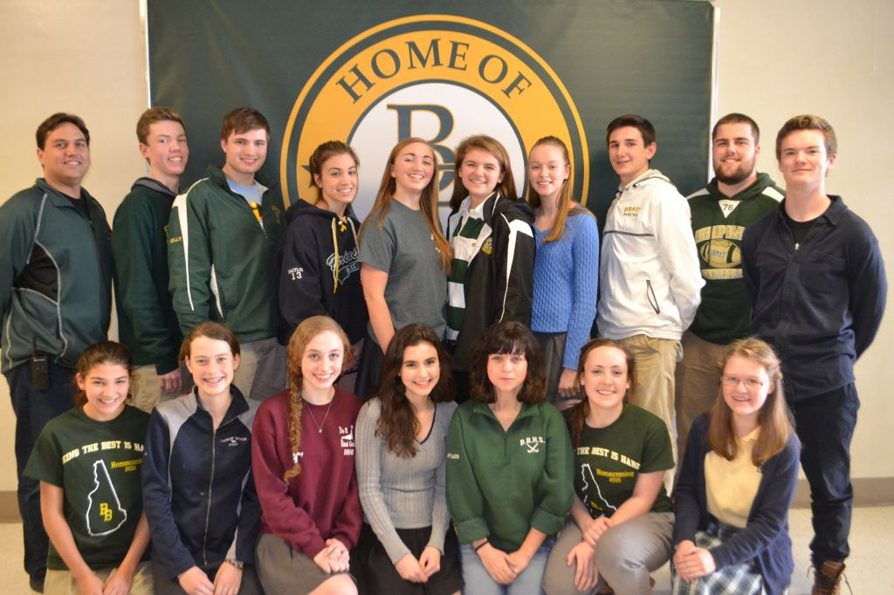
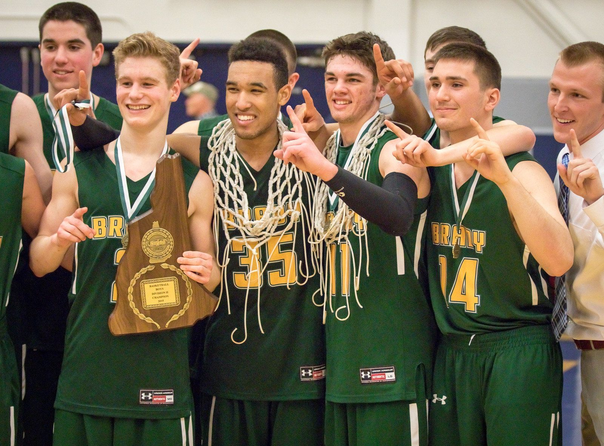
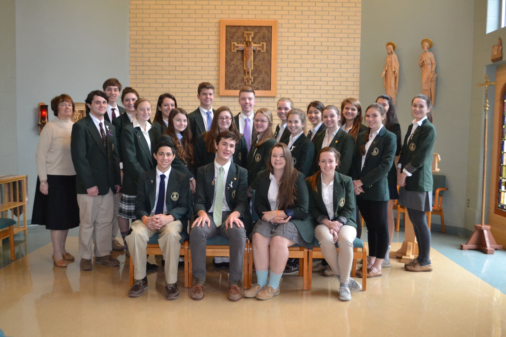
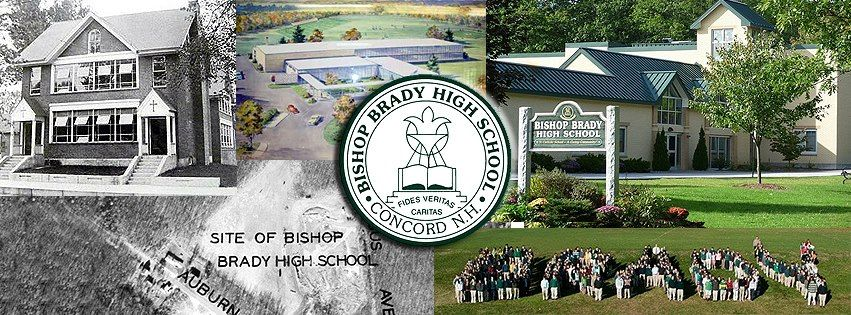

Bishop Brady High School is a Catholic coeducational secondary school located in Concord, New Hampshire. Students of varied religious, social and academic backgrounds are a part of the Bishop Brady community.
Bishop Brady is a center for the pursuit of academic excellence and for the development of the total person. It is a caring community where each person is invited to build quality interpersonal relationships and to exert a positive influence on the climate of the school. Bishop Brady is a school where students learn in a nurturing, creative atmosphere; where educators teach in a dedicated, professional manner, and where administrators know that caring is as important to the heart as knowledge is to the mind.
It has been said that one cannot simply look at Bishop Brady High School from the outside to see what is so special about our school but, one must walk through the doors to really see and feel what we're all about. It's hard to put into words to effectively describe what so many families have discovered inside these walls; a sense of community, a sense of belonging, and a feeling that there's so much to learn from our program, both academically and spiritually.

Student Community

Boy's sports team
Girl's sports team

Campus Ministry
Math&Science Team
Family Community

Mission Statement
Bishop Brady is a Roman Catholic, college preparatory high school, designed to promote the ideals of Faith, Learning and Service. We bear witness to our faith through community action, charitable endeavors, and caring relationships. In partnership with our families and the greater community, Bishop Brady challenges students to demonstrate excellence in all of their endeavors.
History
Bishop Brady traces its roots to St. John’s High School which was established in 1930 on South State Street in Concord, New Hampshire. Named for the Most Reverend Matthew F. Brady, D.D., Bishop of Manchester, 1945-1959, Bishop Brady High School opened its doors in September 1963 as a Catholic co-educational school offering a college preparatory program in a supportive Christian atmosphere.
Continuing the traditions of St. John’s High School, Bishop Brady High School carries on the motto, “fides, caritas, veritas”- translated as faith, charity, and truth- the backbone of the strong principles behind the development of the total person. Our graduates are ready to face the world armed with a solid foundation of academic strength, a compassion for others, and a healthy respect for their religious beliefs, family and society.